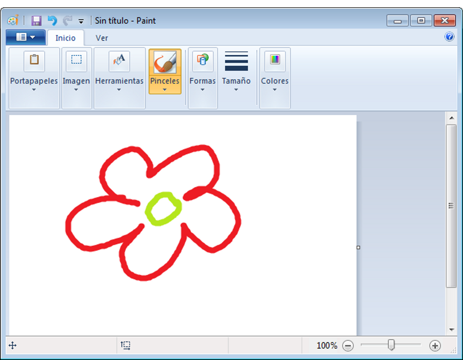
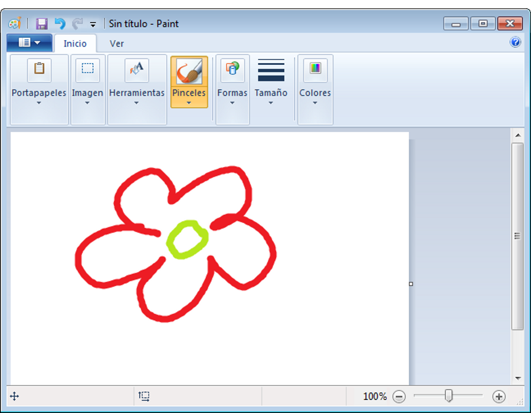

Iniciación a la informática e Internet
Aplicaciones
Apreta la tecla → para avanzar.


En informática, una aplicación es un tipo de programa informático diseñado como herramienta para permitir a un usuario realizar uno o diversos tipos de trabajos.
Ejemplos de aplicaciones:

Hay algunas aplicaciones que ya vienen pre-instaladas en Windows 7, y que podemos utilizar directamente.
Algunas de las aplicaciones preinstaladas en Windows 7:


 

Cambia de foto con las teclas: ↑ y ↓

Hay muchas otras aplicaciones que no vienen pre-instaladas en Windows 7, y que deberemos instalar para poder utilizarlas. El método más común de acceder a estas aplicaciones es descargarlas a través de Internet. Algunas de las aplicaciones más famosas:


Cambia de foto con las teclas: ↑ y ↓

Para insertar algunos caracteres se requiere que realicemos una combinación de teclas. Es uno de los conceptos más complicados al principio del teclado, pero una vez lo dominéis veréis que es más fácil de lo que parecía.
 Poner mayúsculas (o carácter alternativo principal).
Poner mayúsculas (o carácter alternativo principal). Carácter alternativo secundario.
Carácter alternativo secundario. Activa un comando al combinarlo con otra tecla. (Por ejemplo, copiar/pegar)
Activa un comando al combinarlo con otra tecla. (Por ejemplo, copiar/pegar)Veamos algunos ejemplos básicos de escritura que conseguimos con las combinaciones de teclas:
+  = A
+
= A
+  = "
+ = @
+
= "
+ = @
+  = <acción copiar>
+
= <acción copiar>
+  = <acción pegar>
= a
+ = A
= 2
+ = "
+ = @
= <acción pegar>
= a
+ = A
= 2
+ = "
+ = @
 = Espacio en blanco
= Espacio en blanco
 = Borrar la letra detrás del cursor
= Borrar la letra detrás del cursor
 = Mover el cursor por la pantalla
= Espacio en blanco
= Borrar la letra detrás del cursor
= Mover el cursor por la pantalla
= Espacio en blanco
= Borrar la letra detrás del cursor
 = Borrar la letra delante del cursor
= Mover el cursor por la pantalla
= Borrar la letra delante del cursor
= Mover el cursor por la pantalla
 = Salto de línea
= Salto de línea
 = Escape (cancelar)
= Escape (cancelar)

Al mantener pulsada una tecla se activará el modo repetición, y la letra pulsada se repetiraaaaaaaaaaaaaaaaaaaaaaaaaaaa muchas veces..